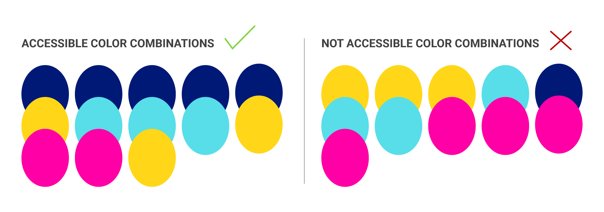

As an emerging Latina graphic designer, I’ve noticed that narratives about Latine designers are often difficult to find in a single location. To address this gap, I am creating an open-source forum (a space where users can both contribute to and discuss the same content) named MOSAICO, which collects and preserves the stories of Latine designers, making it easier for others like me to discover graphic designers from similar backgrounds.
You may have noticed that I mostly use Latine. For this project, I believe that Latine encompasses various identities and promotes an inclusive environment within our community. While no single term can cap- ture everyone's identity, and recognize that the discus- sion about terminology is complex and changing. Each person has the right to choose the term that resonates with them. As we learn, MOSAICO aims to grow and foster a welcoming community.


The color palette draws inspiration from the diverse traditions and cultures of Latin America. Below is a picture of various traditional dresses from different Latin American countries, showcasing how these vibrant colors are actively used. The following colors must be paired accordingly to ensure sufficient contrast for legibility and accessibility across the website.
The brand imagery of MOSAICO draws inspiration from mosaic art found in Latin America. This connection to Latin American art reflects my desire to learn more about my Mexican heritage and other Latin American cultures, with the goal of decolonizing the art and design canon.

MOSAICO is Spanish for "mosaic”, the practice of arranging small pieces of existing materials, such as tile, glass, or stone, to create a larger picture or pattern. With MOSAICO, I aim to utilize a similar practice by connecting the existing narratives of Latine graphic designers. The goal is to illustrate the diversity, intersectionality, and influence of the Latine community within the design field.
The MOSAICO brand captures a bold yet minimalist approach. The MOSAICO title is a geometric sans serif named Ofelia Display type. Ofelia was created by Brazilian Designer Daniel Sabino under the text foundry Blackletra. It is a contemporary, straightforward type that is complemented by a vibrant yet simple mosaic pattern.

The primary logo serves as a hero image for online platforms and merchandise. It can be formatted in black, white, brand colors, or a clipping masked image related to the content on the MOSAICO webpage. Do NOT don’t stretch, use unaffiliated brand colors, and/or rotate logo.
I specifically picked type that came from Foundries that aligned with Latine origins and designers.

Brother 1816 is from TipoType Foundry created by Uruguayan designers Fernando Díaz and Ignacio Corbo.


Petala Pro is from Typefolio, a independent Brazilian typefoundry, established by the designer Marconi Lima.

Basic Sans is created by Daniel Hernández and from Latinotype is a Chilean independent type foundry established in 2008. Latinotype specializes in the design of high quality typefaces, which are an expression of their Latin American identity.


I met with Ana Llorente, a Latina graphic designer and educator from San Francisco and Los Angeles who specializes in collaborative learning experiences and has taught Cuban Graphic Design through BIPOC DESIGN HISTORY. We connected via Zoom after Lafe's introduction, given her expertise in Design in Context. Ana provided valuable resources like the People's Graphic Design Archive and are.na, and observed that MOSAICO effectively captures cultural diversity like pixels forming a complete image. Her critique focused on improving the logo integration with the mosaic background, preferring the organic M monogram for its tension and metaphorical value, and suggesting more exploration with colors beyond blue to better represent Latin American culture. She encouraged me to apply the identity system cohesively across different media, think beyond conventional approaches, and embrace more experimental design inspired by references like the 1968 Mexico Olympics.

The feedback session with Ramon Tejada, a DominicanYork designer and educator who serves as Associate Professor and Department Head in Graphic Design at RISD, provided valuable insights for the MOSAICO project. Ramon, a 2024 Vilcek Prize recipient with expertise in collaboration and inclusion through his "puncturing" practice, offered guidance on decolonizing design approaches for the project. His feedback emphasized self-reflection on defining decolonization in design, reconsidering the "brand" framing, and reimagining website structure beyond traditional wireframes. Ramon encouraged using the mosaic concept for world-building, suggesting the collection of Latino design narratives with visual collation possibilities, and recommended delivering a prototype using Readymag for a more experimental approach. He shared resources for typography, website building, and examples of similar projects, concluding that Latin design's fluid and maximalist nature should inspire breaking free from Western design constraints to create a structure that authentically represents Latino narratives.